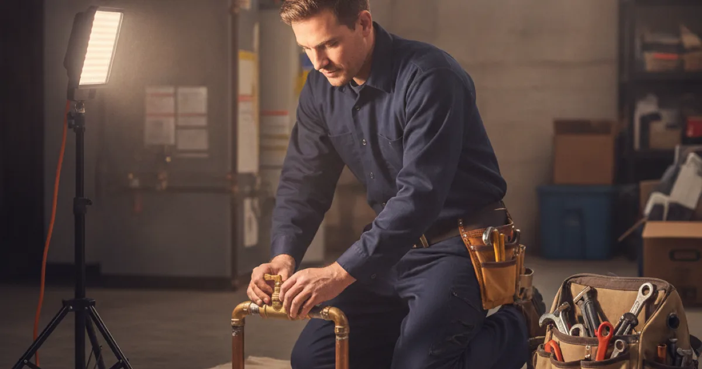
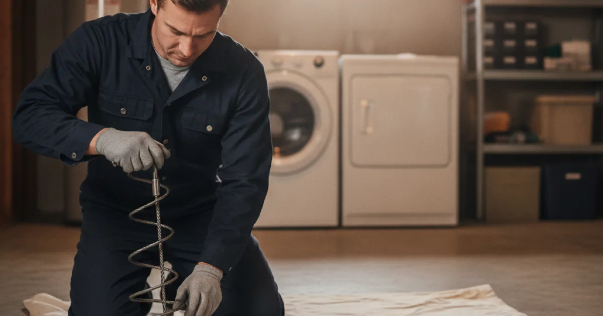

Your Licensed, Insured Plumber in Westchester County, NY
Locally owned, licensed, and insured. We’re based in Armonk and work across Westchester — diagnosing the problem properly, explaining your options, and giving you the price before we start.
- Licensed & Insured
- Same-Day Service Available
- Upfront Pricing
- 15+ Years of Experience
Why homeowners here call us
When something goes wrong with your plumbing, you need a local plumber who answers the phone, shows up when promised, and fixes the problem the right way.
Locally owned and operated
We live and work in the same towns we serve. That’s not a slogan — it’s why we care whether you’d call us again.
Honest recommendations
We’ll tell you when a repair beats a replacement, and when a problem can wait. No pressure, no unnecessary upsells.
Upfront pricing
You get the price before the work starts. If we find something unexpected, we stop and talk to you rather than adding to the bill.
Clean, respectful work
Floors protected, mess taken with us, and a clear explanation of what we did before we leave.
That covers the everyday work as much as the emergencies. Have a look at the full range of plumbing work we handle across Westchester homes and small businesses.
What our customers say
Reviews from our Google Business Profile will appear here.
Emergency Plumbing Repair
Most emergency plumbing pages are a phone number and a promise about how fast someone will arrive. We think the more useful thing is telling you what to do in the first five minutes, because minutes of water shut off early save far more than minutes of driving.
So call us and we’ll talk you through finding your shut-off while we’re on the way. Then we trace the leak back to where it actually started rather than the nearest wet patch, explain what we found, and give you the price before anything gets repaired.
We’ll also be straight about what isn’t urgent. A running toilet can wait until Tuesday and cost you less. But burst pipes and after-hours plumbing emergencies genuinely can’t, and that’s when you should call without hesitating.
Learn More
Water Heater Installation

Plenty of companies around here lead with tankless, because it’s the bigger sale. It’s a genuinely good option for some houses and a poor one for others, and the difference usually comes down to what’s already in your basement.
In older Westchester homes, moving from a tank to tankless often means upsizing the gas line and adding separate venting — real costs that don’t show up in a unit-price comparison. We’ll tell you what the honest difference works out to for your house, then let you decide.
We also handle the permit side properly. Most Westchester municipalities require one for a water heater replacement, and gas work gets inspected. Whether it’s a straight swap or installing a new water heater of a different type entirely, that’s part of the job rather than your problem.
Learn MoreDrainage Services
Search for drainage help in Westchester and you get two completely different trades back, mixed together: plumbers who work inside the pipes, and excavation contractors who work outside the house. Nobody explains the difference, which leaves you guessing.
Here’s the short version. Slow drains, backups, blocked or broken sewer lines, and sump pumps are plumbing — our work. A soggy yard, water pooling against the foundation, French drains and regrading are excavation work, and we’ll point you toward the right contractor rather than pretending otherwise.
If you’re not sure which one you have, that conversation is free. Describe what you’re seeing and we’ll narrow it down — then handle drainage and sewer work across the county if it turns out to be ours.
Learn More
Drain Cleaning

Before you call anyone, try the simple things. Clean the strainer. Use a plunger properly — cover the cup, block the overflow, and keep going longer than feels reasonable. On an early-stage kitchen clog, very hot water and dish soap sometimes does it.
What we’d ask you to skip is chemical drain cleaner. It sits against older cast iron and plastic traps attacking them while the blockage stays put, and if it doesn’t clear, the next person opening that trap is reaching into caustic liquid. Baking soda and vinegar are harmless but won’t touch established grease.
When it does need us, the job is removing what’s in there rather than boring a hole through it, and telling you what came out. Grease, roots, and broken pipe are three different conversations — clearing a stubborn clogged drain properly means you’re not calling again in three months.
Learn MoreSump Pump Installation
The question we get asked most is whether having a sump pump means something is wrong with the house. It doesn’t. Much of this county sits on dense, clay-heavy ground over shallow bedrock, so rain moves sideways until it finds a foundation rather than soaking away. A pump is simply how that water gets somewhere useful.
Most pumps that fail early weren’t bad pumps — they were the wrong pump for that basement. What matters is how much water arrives in a bad storm and how high it has to be lifted to get outside, because a unit rated at three feet of lift moves far less at ten.
We size it for your basement rather than replacing like for like, and we’ll tell you honestly whether a battery backup is worth it for your situation. For a finished basement, keeping a finished basement dry during the storms that also cut the power is usually the whole argument.
Learn More
Where we work
We’re based in Armonk and cover Westchester County — including Pleasantville, Mount Kisco, Yonkers, Bedford, and Scarsdale.
Working in one county for years means we know what tends to be behind a problem before we arrive. Older neighbourhoods with original cast iron waste stacks and clay sewer laterals. Mature trees over those laterals. A real mix of municipal sewer and septic within a few miles of each other, which genuinely changes what identical symptoms mean. Finished basements where a small leak becomes an expensive one quickly. And winters cold enough that pipes in crawlspaces, garages, and exterior walls need thinking about every year.
That’s not local colour for the sake of it. It’s the difference between guessing and knowing where to look first.
How a job with us goes
- You call and describe it. Often we can tell you straight away whether it’s urgent, and sometimes how to sort it yourself.
- We find the actual cause. Not the nearest symptom. Water travels, and the wet patch is rarely where the problem started.
- We explain what we found, and the options. Including the cheaper one, and what each realistically buys you.
- You get the price before we start. If something unexpected turns up, we stop and re-quote rather than continuing.
- We do the work and clean up. The mess leaves with us.
Licensed, insured, and local
Pete’s Plumbing is a licensed and insured plumbing company with over 15 years of experience, working on residential and light commercial plumbing across Westchester County.
- Licensed plumber
- Westchester County licensed plumber
- Insured
- Residential & light commercial plumbing
- Locally owned & operated
- Emergency plumbing available
Find us
1234 Main Street, Armonk, NY 10504 · +1 855-597-5391
Our Google Business Profile map will appear here.
Common questions
What areas do you cover?
We’re based in Armonk and work across Westchester County, including Pleasantville, Mount Kisco, Yonkers, Bedford, and Scarsdale. If you’re near those and not sure whether you’re in range, just ask.
Do you offer same-day service?
Often, yes — same-day service is available and we handle emergency work. We won’t promise a 24-hour operation we don’t run, though. Call and you’ll get a real answer about when we can be there.
How does your pricing work?
You get the price before the work starts, not after. If we open something up and find the job is different from what we quoted, we stop and talk to you before continuing. We don’t publish prices on this site because a number that isn’t based on your actual situation would be a guess.
Do you work on commercial properties?
We do light commercial plumbing — small business premises, restaurants and commercial kitchens, and similar. Large-scale industrial plumbing isn’t our field, and we’ll say so rather than take on something outside what we do well.
Are you licensed and insured?
Yes — we’re a licensed plumber in Westchester County and carry insurance. That’s also what allows permitted work to be inspected and signed off properly, which matters more than people expect when a house is later sold.
Will you tell me if something doesn’t need fixing?
Yes. It comes up regularly — a water heater that’s noisy but fine, a drain that needs a plunger rather than a plumber, or a problem that turns out to belong to a different trade entirely. You’ll get that answer straight.
What should I do while I wait for you to arrive?
If water is running where it shouldn’t, shut it off — at the fixture valve if it’s one fixture, at the main if it’s bigger. Kill power to any circuit near standing water if you can reach the panel safely. Then move belongings and stop there; pulling up flooring rarely helps.
Need a plumber in Westchester?
Call and describe the problem. We’ll tell you what it likely is, what it takes to fix, and when we can be there.